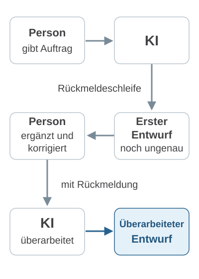
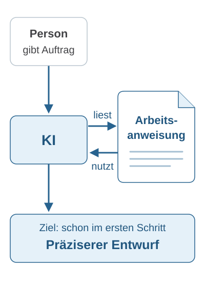

Mein Bild von KI
Ein Raum aus Sprache.
Kontext gibt Orientierung.
Ein Denkbild, keine gemessene Modellkarte.
Mein Bild von KI ist ein Raum sprachlicher Beziehungen. Sprachmodelle lernen aus vielen Texten, wie Wörter und Aussagen zusammenhängen. In diesem Raum stehen sie in Verbindung mit Situationen, Erfahrungen und Wissen.
Eine Frage kann in verschiedene Richtungen führen. Der Kontext gibt Orientierung:
- Worum geht es?
- Was ist vorher passiert?
- Was wollen wir erreichen?
Deshalb gehört für mich zur guten Anwendung von KI, die wichtigen Zusammenhänge deutlich zu machen. Ob die Antwort passt und stimmt, müssen wir trotzdem prüfen.
Ich habe sechs Jahre Banken und Unternehmen zu Klimarisiken beraten und erforsche heute, wie Sprachmodelle zu ihren Antworten kommen. In Unternehmen richte ich KI so ein, dass ihre Antworten prüfbar bleiben.
Zwei Beispiele zum Öffnen
Im AlltagWas bedeutet „Bank“?
„Wir treffen uns an der Bank.“
Haben wir gerade über einen Spaziergang gesprochen, ist eine Sitzbank naheliegend. Wollten wir Geld abheben, denken wir eher an eine Bankfiliale.
Die Worte bleiben gleich. Der Kontext macht eine Bedeutung plausibel. Fehlen wichtige Angaben, hilft eine klare Anweisung an die KI: „Frage nach, bevor du fehlende Informationen annimmst.“
Im UnternehmenGleiche Nachricht. Andere Aufgabe.
„Das ist zu teuer.“
Beim Angebot
Mehr als mein Budget.
Günstigere Variante prüfen.
Bei der Rechnung
Mehr als vereinbart.
Preisabweichung klären.
Dieselbe Nachricht kann unterschiedliche Aufgaben bedeuten. Beim Angebot geht es darum, was ins Budget passt. Bei der Rechnung muss zuerst geklärt werden, warum der Betrag abweicht. Damit KI sinnvoll unterstützen kann, braucht sie diese Informationen.
Selbst ausprobieren
Richten Sie Ihre KI
auf wiederkehrende Aufgaben ein.
Ein Interview. Ihre persönliche Arbeitsanweisung.
Zum Beispiel: immer wieder Kundenanfragen beantworten.
Wann erfährt die KI, worauf es Ihnen ankommt?
Ohne Arbeitsanweisung
Sie ergänzen Ihre Vorgaben nach dem ersten Entwurf.

Was noch fehlt, klären Sie in einer weiteren Runde mit der KI.
Mit Arbeitsanweisung
Ihre Vorgaben stehen schon vor dem ersten Entwurf bereit.

Die KI kann Ihre Vorgaben schon beim Entwerfen berücksichtigen.
Wählen Sie eine wiederkehrende Aufgabe aus. Das Interview hilft Ihnen zu klären, welche Informationen wichtig sind und wie Ihre KI Sie unterstützen soll. Daraus entsteht eine kurze Arbeitsanweisung. Die Angaben zum konkreten Fall bleiben davon getrennt. Ihre erste Aufgabe können Sie anschließend direkt im selben Chat ausprobieren.
-
Kopieren Sie das Interview.
Der Starttext führt Ihre KI durch bis zu fünf kurze Fragen. Planen Sie dafür etwa fünf Minuten ein. Am Ende erhalten Sie Ihre Arbeitsanweisung und eine kurze Prüfliste. Danach können Sie Ihre erste Aufgabe direkt ausprobieren.
Interviewtext ansehen
-
Beantworten Sie die Fragen in Ihrer KI.
Öffnen Sie einen neuen Chat, fügen Sie den Interviewtext ein und senden Sie ihn ab. Das Gespräch findet dort statt.
-
Probieren Sie Ihre erste Aufgabe direkt aus.
Die KI fragt: „Soll ich deine erste Aufgabe jetzt mit diesen Anweisungen bearbeiten?“ Antworten Sie mit „Ja“. Sie bleiben im selben Chat.
Lesen Sie den Entwurf und sagen Sie, was Sie ändern möchten. Soll eine Änderung auch künftig gelten, sagen Sie das dazu. Dann erhalten Sie die Arbeitsanweisung noch einmal vollständig zum Kopieren.
Vorher und nachher: Ihre eigene Aufgabe
Nehmen Sie einen konkreten Arbeitsauftrag, dessen Ergebnis Sie selbst beurteilen können – zum Beispiel Ihren Auftrag aus dem Interview. Halten Sie den Auftrag mit allen benötigten Angaben einmal schriftlich fest.
1 Vorher: ohne Ihre neue Arbeitsanweisung
Öffnen Sie einen neuen Chat und geben Sie Ihren Arbeitsauftrag ein. Fügen Sie die gerade erstellte Arbeitsanweisung noch nicht hinzu. Bewahren Sie die Antwort für den Vergleich auf.
2 Nachher: mit Ihrer Arbeitsanweisung
Öffnen Sie einen zweiten neuen Chat. Fügen Sie zuerst „Meine Arbeitsanweisung“ aus dem Interview ein und direkt darunter denselben Arbeitsauftrag, wörtlich unverändert. Senden Sie beides zusammen ab.
Nutzen Sie denselben Dienst, dasselbe Modell und dieselben Einstellungen. Speichern Sie die neue Arbeitsanweisung erst nach dem Vergleich dauerhaft. Lassen Sie bereits vorhandene persönliche Anweisungen in beiden Chats unverändert. Neue Chats entfernen diese Personalisierung nicht.
Welche Antwort hilft Ihnen bei Ihrer Arbeit mehr?
- Was können Sie direkt verwenden, und was müssen Sie noch korrigieren?
- Welche Annahmen macht die KI, welche Rückfragen stellt sie?
- Was fehlt oder stimmt nicht – auch in der zweiten Antwort?
Auch ohne Ihre neue Arbeitsanweisung kann eine brauchbare Antwort entstehen. Ein einzelner Vergleich zeigt ein Beispiel; Antworten können variieren. Eine Verbesserung ist nicht garantiert.
Optional: für spätere Chats speichern
Ihre Arbeitsanweisung gilt für den gewählten Aufgabentyp. Kopieren Sie „Meine Arbeitsanweisung“ aus Ihrem KI-Chat und fügen Sie sie bei passenden Aufgaben wieder ein.
Die persönlichen Einstellungen unten gelten auch für andere Chats. Speichern Sie dort nur Vorgaben, die auch für andere Aufgaben gelten sollen, etwa Ihren bevorzugten Schreibstil. Prüfen und ergänzen Sie vorhandene Einstellungen, statt sie ungeprüft zu ersetzen. Der Interviewtext und Angaben zu einzelnen Fällen gehören dort nicht hinein.
ChatGPT
- 1EinstellungenSettings
- 2PersonalisierungPersonalization
- 3Eigene AnweisungenCustom instructionsPassende allgemeine Vorgaben ergänzen
Claude
- 1Ihre InitialenUnten links
- 2Einstellungen → AllgemeinSettings → General
- 3Instructions for ClaudePassende allgemeine Vorgaben ergänzen
Im Gespräch weitergehen
Möchten Sie Ihr Setup
gemeinsam durchgehen?
Für Sie oder Ihr Unternehmen: Beschreiben Sie kurz, wobei Sie Unterstützung suchen.
Sie können auch direkt an felix.borck@gmail.com schreiben.
Wie eine Antwort im Modell zustande kommt, untersuche ich mit Experimenten.
Zu meiner Forschung